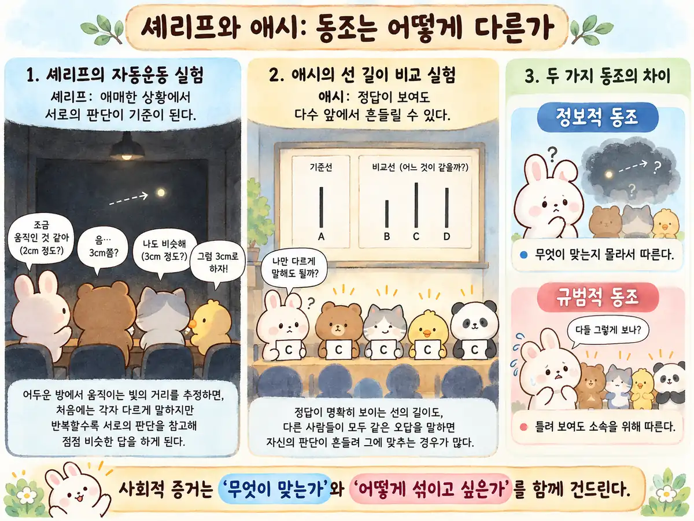
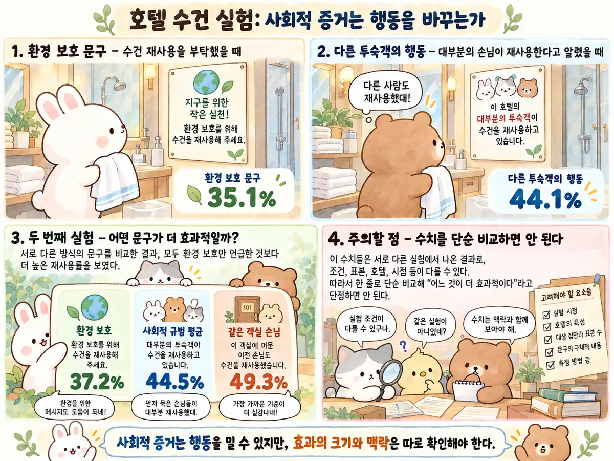
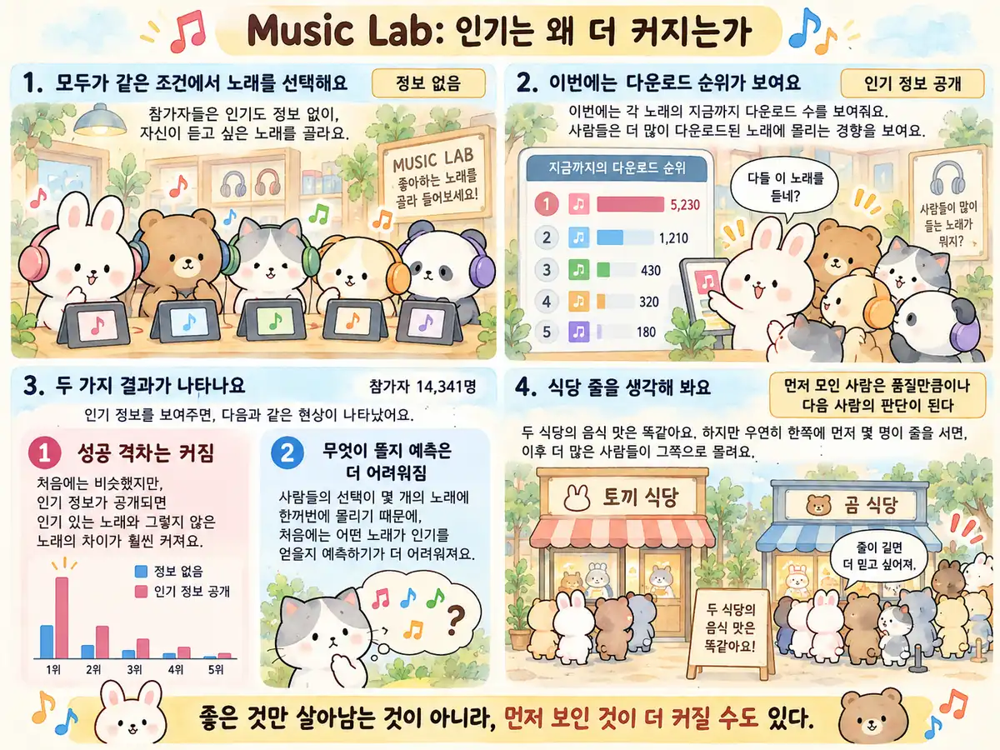
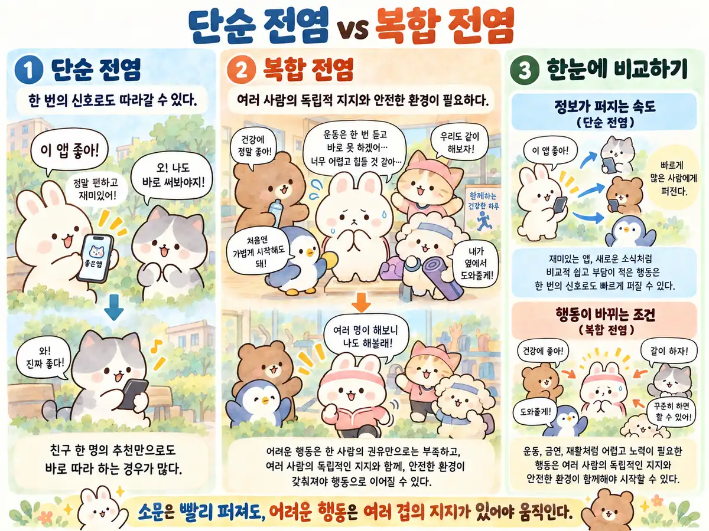
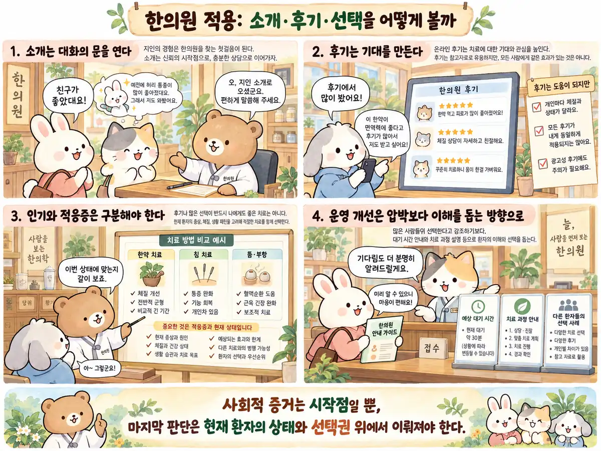
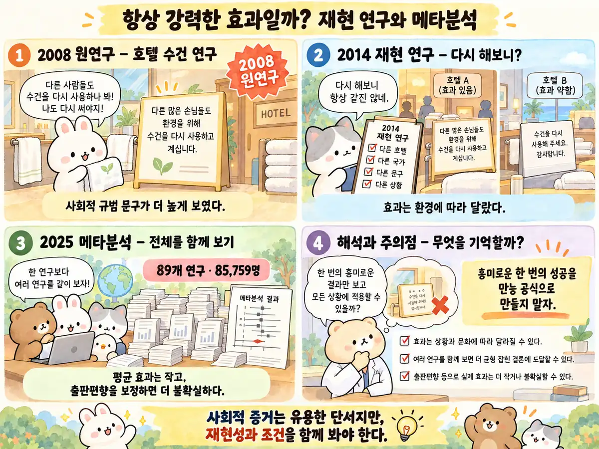
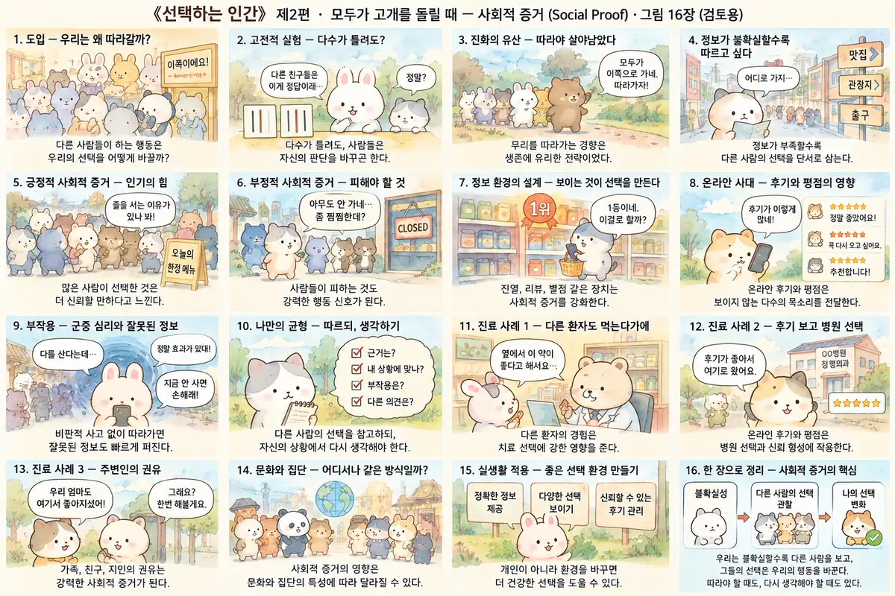

들어가며 · 타인의 행동을 판단의 근거로 삼는 이유
사람은 직접 확인할 정보가 부족할 때 다른 사람의 행동을 판단의 근거로 삼기도 한다. 낯선 도시의 골목에서 사람들이 한 방향으로 올려다보는 장면을 생각해 보자. 무슨 일이 생겼는지 알 수 없다. 그런데 나도 모르게 걸음을 늦추고 고개를 든다. 직접 본 것은 아무것도 없다. 다만 다른 사람들이 보고 있다는 사실을 보았다. 여러 사람이 보고 있으니 관심을 기울일 만한 이유가 있다고 추측하는 것이다. 하지만 무엇을 보고 있는지, 서로 독립적으로 판단했는지는 아직 확인하지 못했다.
Richard Shotton은 《The Choice Factory》의 두 번째 장을 바로 이런 장면으로 연다. 그리고 묻는다. 유명한 브랜드가 더 유명해지는 이유는 정말 품질이 뛰어나서일까, 아니면 이미 유명하다는 사실 자체가 다음 소비자의 선택을 부르기 때문일까. 질문의 범위는 마케팅을 넘어선다. 사람이 몰린 식당, 추천받은 의사, 호평이 쌓인 책, 다수가 믿는 투자 전망에 이르기까지 우리는 타인의 판단을 자신의 선택 근거로 사용한다.
‘남들도 그렇게 하니까’라는 이유는 생각이 없다는 증거일까. 아니면 한정된 시간과 정보 아래에서 타인이 확인한 정보를 활용하는 방법일까. 이 글에서는 타인의 선택이 정보가 되는 조건과 판단을 왜곡하는 조건을 구분한다. 우리는 어떻게 타인의 선택을 정보로 바꾸며, 어느 순간 그 정보에 속기 시작하는가.
01 · 직접 확인하지 못한 정보를 타인의 선택에서 얻는다
어떤 선택이 옳은지 알아내려면 관찰하고 비교해야 한다. 그런데 모든 제품의 내구성을 직접 시험할 수도, 모든 의사의 진료 과정을 살펴볼 수도 없다. 그래서 사람은 타인의 행동을 보고 자신이 직접 확인하지 못한 품질이나 경험을 추측한다. 식당 앞 줄은 음식에 대한 만족이 집계된 결과일 수도 있고, 특정 병원에 소개 환자가 많다는 사실은 이전 환자들이 경험한 친절과 신뢰의 흔적일 수도 있다. 다른 사람들이 먼저 확인한 경험을 참고하면 자신이 직접 비교하는 수고를 줄일 수 있다.
이것이 사회적 증거(social proof)의 정보적 측면이다. 선택지가 낯설고, 평가 기준이 복잡하고, 실패의 비용이 클수록 타인이 무엇을 택했는지 눈여겨보게 된다. 고전적 사회심리학은 불확실한 상황에서 타인의 판단이 지각과 기준 자체를 움직일 수 있음을 보여주었다. 여기서 중요한 말은 ‘불확실성’이다. 확실한 답을 이미 가지고 있을 때와 아무 기준이 없을 때, 타인의 선택에 의존하는 정도는 달라질 수 있다.
하지만 이 추론에는 숨은 전제가 있다. 다른 사람들이 나보다 더 많은 정보를 갖고 있었는가. 그들의 선택은 서로 독립적인가. 그들은 내가 중요하게 생각하는 것을 중요하게 생각했는가. 줄을 선 열 명이 실제로 음식을 먹어본 열 명인지, 처음 두 사람을 보고 줄에 합류한 여덟 명인지는 겉모습으로 구분하기 어렵다. 사람 수는 열 명이지만 독립적인 판단은 두 개뿐일 수 있다.
02 · 타인의 판단을 믿는 이유와 집단에 따르는 이유
무자퍼 셰리프의 1930년대 실험은 어두운 방 속 정지한 빛점이 움직이는 듯 보이는 착시를 이용했다. 모호한 자극을 평가하는 사람들의 추정치는 집단 안에서 하나의 기준으로 수렴했다. 이는 ‘남들도 비슷하게 본다면 내가 본 것이 맞을 것이다’라는 정보 탐색에 가깝다. 그러나 명백한 길이의 선을 비교하는 과제에서도 사람은 때때로 다수의 오답에 동조한다. 이때는 정보만으로 설명되지 않는 힘, 즉 소속과 거절의 두려움이 끼어든다.
모턴 도이치와 해럴드 제라드는 이 두 흐름을 정보적 영향과 규범적 영향으로 구분했다. 전자는 ‘저들이 맞을지도 모른다’이고, 후자는 ‘저들과 달라 보이고 싶지 않다’이다. 두 연구자는 선 판단 과제를 대면·익명으로 수행하게 하거나 사전 판단을 기록하게 하는 등 조건을 바꾸어 집단의 압력이 어떻게 달라지는지 살폈다. 같은 결과인 동조라도 마음속 사정은 다르다. 어떤 사람은 정말 생각을 바꿨고, 다른 사람은 속으로 의심하면서 공개적으로만 고개를 끄덕인다. 다만 실험이 각 참가자의 내면 동기를 모두 직접 측정한 것은 아니다.
공개적으로 표현한 동의가 실제 생각과 일치하는지도 확인해야 한다. 다수가 말하는 의견과 다수가 실제로 믿는 의견은 일치하지 않을 수 있다. 모두가 서로의 눈치를 보면, 아무도 강하게 믿지 않는 견해가 집단의 공통된 의견처럼 보일 수 있다. 인기 있는 선택은 때로 품질에 대한 판정이 아니라, 그 선택을 했다고 말하는 것이 안전하다는 신호다.

03 · 다른 투숙객의 행동을 알렸을 때 수건 재사용이 달라졌을까
호텔 욕실에 수건을 다시 사용해 달라는 카드를 놓는다고 생각하자. 첫 문구는 물과 에너지를 절약하자고 호소한다. 두 번째는 다른 투숙객 대부분이 수건을 재사용한다고 알려준다. 기후 위기의 심각성을 길게 설명하는 쪽이 더 설득력 있어 보이지만, 실제 행동은 언제나 논리적인 설명의 길이에 비례하지 않는다. Richard Shotton이 제2장에서 상세히 다루는 Goldstein·Cialdini·Griskevicius의 연구는 바로 그 차이를 측정했다.
2008년 논문의 첫 현장 실험에서는 환경 보호를 강조한 조건의 재사용률이 35.1%, 호텔 투숙객 다수의 행동을 알려준 조건이 44.1%였다. 두 조건의 차이는 9.0%포인트다. 연구자가 직접 관찰한 것은 투숙객이 자기 신념을 바꿨는지가 아니라, 객실 정비 직원이 기록한 첫 번째 적격일의 수건 재사용 여부였다. 숙박을 이틀 이상 한 투숙객을 대상으로 했고, 여러 날의 누적 행동이나 장기 습관을 측정한 것이 아니다. 이 구분을 놓치면 단순한 표지판의 효과를 인간 본성 전체에 대한 법칙으로 과장하기 쉽다.
두 번째 실험에서는 비교 조건과 기준 집단을 더 세분화했다. 환경 보호 문구의 재사용률은 37.2%, 여러 종류의 사회적 규범 문구를 합친 비율은 44.5%였다. 특히 바로 ‘이 객실’을 이용한 투숙객의 행동을 기준으로 한 문구는 49.3%였고, 다른 세 종류의 사회적 규범 문구를 합친 42.8%보다 높았다. 앞의 35.1%와 뒤의 49.3%를 같은 무작위 실험의 두 조건처럼 나란히 놓아 비교하면 안 된다. 서로 다른 실험에서 나온 수치이며, 효과가 나타난 상황과 비교군이 다르기 때문이다.
이 연구에서 추가로 살펴볼 결과는 사람들이 그다지 특별한 정체성으로 여기지 않는 ‘이 객실의 이전 손님’에게 반응했다는 사실이다. 왜 그랬을까. 내 상황과 가장 가까운 사람이 남긴 흔적을 유용한 판단 근거로 읽었을 수도 있고, 낯선 장소에서 무엇이 통상적인 행동인지 알려주는 작은 단서가 필요했을 수도 있다. 다만 연구자가 제시한 메시지에 등장한 다수의 재사용 비율과 실제 측정된 하루 재사용률은 정의와 집계 기간이 달랐다. 타인의 행동을 이용해 설득할 때에는 메시지가 사실이며 그 사실이 정확히 무엇을 뜻하는지 먼저 물어야 한다.

04 · 자신이 말하는 선택 이유와 실제 행동은 왜 다를까
Shotton은 사회적 증거의 설득력이 강한데도 광고에 자주 활용되지 않는 이유 중 하나로 소비자 설문을 지목한다. 사람들은 자신의 결정을 독립적인 취향과 합리적 비교의 결과로 설명하고 싶어 한다. 다른 사람의 선택을 보고 마음을 정했다고 인정하기를 꺼릴 수 있다. 그러나 어떤 메시지가 설득력 있을 것 같은지를 묻는 질문과, 실제로 그 메시지를 접한 뒤 무엇을 했는지를 관찰하는 질문은 전혀 다른 결과를 만들 수 있다.
원서는 인기 정보를 제시한 맥주 사례도 소개한다. 저자는 가상의 맥주 브랜드 정보를 보여주는 조사에서 ‘특정 지역에서 가장 인기 있는 맥주’라는 설명을 추가하자 시도 의향이 커졌다고 보고한다. 남런던의 한 양조장에서는 주간 인기 상품 표지가 판매 비중을 높였다고도 설명한다. 다만 저자가 진행한 조사와 매장 시험을 모두 보편적인 인과 법칙으로 간주할 수는 없다. 매장에서 누가 언제 들어왔는지, 진열과 계절이 얼마나 영향을 주었는지, 반복 검증이 가능했는지는 별도로 살펴야 한다. 원서가 제공하는 것은 저자의 조사와 매장 적용 사례이며, 다른 상황에서도 같은 효과가 나는지는 따로 검증해야 한다.
사람이 실제 행동의 원인을 말로 온전히 알지 못하는 것은 거짓말을 해서만이 아니다. 선택에는 기억되지 않는 주변 정보, 그날의 피로, 익숙한 이름, 남에게 설명하기 편한 명분이 겹친다. 스스로 만든 이유와 실제 선택을 움직인 요인은 서로 다를 수 있다. 그러므로 한의원에서 만족도 설문을 읽을 때에도 ‘가장 중요하다고 답한 항목’과 ‘실제로 재방문할 때 영향을 준 항목’을 동일시하지 않는 편이 좋다. 설문은 귀중한 자료지만 관찰, 재방문 기록, 환자의 자발적인 피드백과 함께 해석할 때 더 많은 것을 알려준다.
05 · 인기 순위에는 품질과 초기 선택이 어떻게 반영될까
좋은 음악은 결국 널리 알려질까. 그럴 수도 있다. 그러나 비슷한 수준의 좋은 노래가 여러 곡 존재한다면 어떤 곡이 먼저 주목받느냐에 따라 순위는 크게 달라질 수 있다. 사회학자 Salganik·Dodds·Watts는 2006년 실험에서 처음 듣는 음악을 고르게 하면서, 어떤 사람에게는 다른 참가자의 선택 정보를 가리고 다른 사람에게는 보여주었다. 모두 1만 4천여 명이 참여한 온라인 음악 시장에서 타인의 다운로드 정보가 강하게 주어질수록 성공의 격차가 커졌고, 무엇이 크게 성공할지 예측하기도 어려워졌다.
중요한 점은 이 실험이 ‘품질은 아무 상관이 없다’고 주장하지 않았다는 것이다. 연구자들이 품질을 가늠할 대리지표로 사용한 것은 타인의 선택 정보가 가려진 독립 조건에서의 다운로드 성적이었다. 음악적 우수성을 전문가가 절대적으로 채점한 값이 아니다. 이 비교 기준에서 상대적으로 성적이 높았던 곡이 완전히 실패하거나 낮았던 곡이 모두를 압도하는 일은 제한적이었다. 다만 그 사이의 넓은 영역에서는 작은 초반 차이가 나중의 거대한 차이로 증폭될 수 있었다. 같은 노래를 들은 여러 독립적인 집단이 서로 다른 히트곡을 만들어 내는 모습은 인기 순위만으로 음악의 품질을 판단하기 어렵다는 점을 보여준다.
한 사람의 선택은 다음 사람에게 정보를 제공한다. 뒤따른 선택이 늘면 이후 사람들에게는 더 많은 사람이 검증한 결과처럼 보일 수 있다. 처음의 선택이 우연에서 비롯됐더라도, 몇 번 되풀이되면 우리는 그것을 집단의 확고한 검증으로 오해한다. 이런 과정은 ‘좋은 것이 더 알려지는 경쟁’과 ‘알려진 것이 더 좋아 보이는 경쟁’을 섞어 놓는다. 둘의 결과가 같은 경우도 있지만, 서로 전혀 다른 경우도 있다.
생각 실험을 해 보자. 동일한 식당 두 곳이 같은 가격과 음식을 제공한다. 첫 손님 세 명이 우연히 왼쪽 식당에 들어간다. 뒤따르는 사람들은 왼쪽에 손님이 있다는 이유로 그곳을 더 믿는다. 저녁이 되자 왼쪽 식당에 줄이 길게 늘어선다. 다음 날 누군가는 어제의 사진을 보여주며 ‘역시 검증된 맛집’이라고 말한다. 만약 처음 세 명이 오른쪽을 골랐다면 어떤 결론이 나왔을까. 질문의 핵심은 어느 식당이 나쁘냐가 아니라, 우리가 줄의 길이와 실제 독립적인 경험의 수를 얼마나 쉽게 혼동하느냐에 있다.

06 · 정보가 퍼지는 조건과 행동이 바뀌는 조건은 다르다
정보가 도착했다고 해서 바로 행동으로 이어지는 것은 아니다. 친구가 새로운 앱을 쓴다는 소식은 한 번 듣는 것만으로도 충분할 수 있다. 그러나 진료 방법을 바꾸거나 장기간 생활 습관을 수정하는 일은 위험을 감수하거나 기존 정체성을 바꾸는 선택이 된다. 이때는 여러 사람의 독립적인 지지, 실제로 가능한 환경, 실패했을 때 회복할 수 있는 장치가 함께 필요할 수 있다. Centola와 Macy가 연결망 모형으로 분석한 ‘복합 전염’은 정보가 멀리 전달되는 속도와 새로운 행동이 채택되는 조건을 구분한다. 2007년 논문은 환자에게 특정 행동을 처방한 임상시험이 아니며, 한의원에서의 적용은 이론을 바탕으로 한 독자적 추론이다.
사회관계망에서 멀리 떨어진 한 명에게서 듣는 유행과, 매일 만나는 여러 사람으로부터 반복해서 접하는 행동은 다르게 작동한다. 유행이 빨리 확산되는 사회라도 어려운 행동은 퍼지지 않을 수 있다. 반대로 외부에 알려지지 않은 작은 집단 안에서 조용히 유지되는 습관은 놀라울 만큼 안정적일 수 있다. 따라서 ‘환자에게 정보를 전달했다’는 사실만으로 ‘그 행동을 실천할 준비가 됐다’고 볼 수 없다.
또 다른 문제는 사람들이 관찰하는 것이 실제 행동 전체가 아니라 ‘보이는 행동’이라는 점이다. 온라인 후기, 대기실 인원, 추천 수는 외부로 드러나지만, 조용히 다른 선택을 한 사람과 불만을 공개하지 않은 사람은 보이지 않는다. 더구나 플랫폼은 이미 반응이 많은 것을 눈에 잘 띄는 위치에 놓고, 그 위치가 다시 반응을 만든다. 주목도가 높은 게시물이 반드시 정확한 게시물은 아니다. 알고리즘이 끌어올린 노출량과 독립적으로 얻은 신뢰를 하나의 수치로 받아들이지 말아야 한다.

07 · 소개와 후기를 진료 판단과 구별하기
가상의 장면을 보자. 처음 내원한 환자가 말한다. ‘친구가 여기서 좋아졌다기에 왔어요.’ 소개라는 사실은 이미 신뢰의 일부를 만든다. 진료받아 보지 않은 사람에게 친구의 경험은 광고 문구보다 구체적이다. 무엇이 아팠고, 어떤 설명을 들었고, 병원에 다니는 동안 무엇이 달라졌는지를 물어볼 수 있기 때문이다. 그러나 이것은 그 환자와 같은 질환을 가진 모든 사람에게 같은 효과가 나타난다는 뜻은 아니다. 친구의 이야기에는 증상의 자연 경과, 다른 치료, 생활 변화, 개인적 기대가 함께 들어 있다.
따라서 좋은 첫 질문은 ‘누구 소개인지’에서 끝나지 않는다. ‘그분의 경험 중 어떤 점이 내원 결정을 도왔나요? 지금 가장 걱정되는 것은 무엇인가요?’라고 이어질 수 있다. 소개를 통해 형성된 신뢰를 출발점으로 삼되, 진단과 치료 선택은 현재 환자의 상태를 독립적으로 평가해야 한다. 환자가 찾아온 이유를 존중하는 것과 친구의 호전 경험을 현재 환자에게도 같은 치료 효과가 날 근거로 삼는 것은 전혀 다르다.
두 번째 가상 장면에서는 환자가 온라인 후기를 읽은 뒤 특정 시술을 요청한다. ‘다들 이걸 맞고 좋아졌대요.’ 의료 선택에서 사회적 증거는 때때로 도움이 되지만 위험한 지름길이 될 수도 있다. 후기는 효과뿐 아니라 설명, 대기, 비용, 시술 경험에 대한 관찰을 전달한다. 반면 적응증, 다른 선택지, 이상반응의 빈도, 치료를 받지 않았을 경우의 경과를 체계적으로 알려주지는 않는다. 환자의 기대를 무시하거나 비웃을 필요는 없다. 후기에서 발견한 기대를 명료하게 듣고, 그 시술이 이번 환자에게 적절한지를 따로 설명해야 한다.
세 번째 장면은 접수대와 치료실 사이에서 발생한다. 직원들은 ‘우리 원래 이렇게 해왔어요’라고 말한다. 새로운 직원은 절차가 비효율적이라 느끼지만 혼자만 다른 말을 하기가 어렵다. 이때 모두가 따르는 방식은 숙련의 증거일 수도, 개선이 지연된 흔적일 수도 있다. 관리자가 해야 할 일은 무조건 개별 직원의 태도를 탓하는 것도, 기존 다수의 방식이 맞다고 선언하는 것도 아니다. 불편이 발생하는 시점과 동선을 기록하고, 환자 안전을 침해하지 않는 범위에서 대안을 시험할 수 있도록 만드는 것이다.
이 세 상황의 공통점은 타인의 경험이 상담이나 업무 논의를 시작하는 이유가 된다는 점이다. 문제는 그다음이다. 소개를 불러온 신뢰가 진료 판단을 대신하고, 후기가 적응증을 대신하고, 관행이 업무 설계를 대신하게 되면 사회적 증거는 판단에 필요한 개별 근거를 확인하지 못하게 할 수 있다. 환자의 선택권을 지키려면 인기와 임상적 필요를 명시적으로 구분해야 한다.

08 · 실제 인기를 알리는 것과 신뢰를 과장하는 것의 차이
원서가 소개하는 기업들은 인기를 있는 그대로 보여주거나, 인기 정보를 소비자가 쉽게 알아보도록 제시한다. 상품을 알아볼 수 있는 디자인, 사람들이 실제로 선택한 카테고리를 알려주는 표지, 특정 집단의 선호를 설명하는 문구가 그런 사례다. 하지만 여기에는 서로 다른 두 행동이 섞여 있다. 이미 존재하는 사실을 이해하기 쉽게 공개하는 것과, 실제보다 널리 선택된 것처럼 느끼게 만드는 것은 윤리적으로 같지 않다.
‘지역에서 가장 많이 선택했다’는 문구를 쓰려면 지역, 기간, 비교 대상, 측정 방법이 분명해야 한다. 숫자 없이 ‘많은 사람이 선택한’이라고만 적으면 듣는 사람은 스스로 규모를 부풀릴 수 있다. 한의원의 경우에는 더욱 조심해야 한다. 환자 후기와 소개는 개인정보와 의료광고 규제, 표현의 사실성, 의료 효과를 오인하게 할 위험이 함께 얽혀 있다. 사람의 신뢰를 얻기 위한 디자인이 진료 결과를 과장하거나 환자 경험을 이용하는 방향으로 흐르면 안 된다.
그렇다면 숫자를 쓰지 않으면서도 신뢰를 보여줄 방법은 무엇일까. 실제 진료 철학을 일관되게 설명하고, 치료 전후 의사결정 기준과 예상 가능한 한계를 밝히며, 질문할 수 있는 구조를 만드는 것이다. ‘사람들이 많이 찾는다’는 정보보다 ‘무엇을 평가하고 언제 치료 방향을 수정하며 어떤 경우 다른 의료기관으로 의뢰하는가’라는 절차적 투명성이 더 적합한 순간이 있다. 전자는 남이 나를 골랐다는 이유를 주고, 후자는 내가 스스로 선택할 수 있는 근거를 준다.
09 · 사회적 규범 메시지의 효과는 후속 연구에서도 나타났을까
흥미로운 실험을 발견했다고 해서 마케팅의 만능 공식이 탄생한 것은 아니다. 독일의 두 호텔에서 수건 재사용 메시지를 다시 시험한 Bohner와 Schlüter의 2014년 연구는 연구 대상과 문구, 호텔 환경을 바꿔 비교했다. 두 차례 현장 연구에서 사회적 규범 메시지가 일반적인 환경 보호 메시지보다 더 효과적이라는 결과는 안정적으로 재현되지 않았다. 무안내 기준선은 두 번째 연구에서 메시지 시험에 앞선 별도 기간에 측정되었으며, 이 기준선과의 비교에서는 안내 메시지들이 재사용을 늘렸다. 이를 두 연구 모두에 동시 무작위 배정된 무안내 집단이 있었다고 해석해서는 안 된다. ‘같은 객실 손님’이라는 가까운 기준 집단의 우위 역시 실험 간 일관적이지 않았다.
이 차이를 어떻게 해석할까. 초기 연구가 잘못됐다고 단번에 결론 내릴 수도 없고, 후속 연구가 무의미하다고 밀어낼 수도 없다. 국적, 투숙 기간, 안내 카드의 신뢰도, 이미 수건을 재사용하는 비율, 측정 시점과 모집된 사람의 구성은 효과의 크기를 바꿀 수 있다. 주목할 점은 바로 이런 조건을 구분하지 않고 처음 관찰된 효과 수치를 다른 조건에서도 그대로 기대하는 판단이다.
2025년 발표된 건강행동 분야의 사전등록 체계적 문헌고찰·메타분석은 사회적 규범 메시지의 평균 효과를 다시 평가했다. 선진국의 16세 이상을 대상으로 한 사회적 규범 메시지 무작위시험 89개(60편의 논문), 참가자 85,759명을 분석하자, 일반적인 모형에서는 평균 효과가 작게 나타났지만 출판편향을 보정한 분석에서는 효과가 통계적으로 뚜렷하지 않았다. 이는 ‘어느 곳에서나 사회적 규범 안내가 무효’라는 뜻이 아니라, 성공한 사례가 더 눈에 띄게 보고됐을 가능성을 고려하면 건강행동을 바꾸는 평균적인 힘을 확신하기 어렵다는 뜻이다.
특히 건강행동을 바꾸기 어렵다는 사실은 의료 현장에 중요한 경고가 된다. 환자의 수면, 운동, 복약, 재활은 손쉽게 눌러보는 구매 버튼과 다르다. 통증, 비용, 돌봄 노동, 이해도, 사회적 지지가 실제 행동을 가로막을 수 있다. 다른 환자들도 하고 있다고 말하는 것만으로 복잡한 행동이 바뀔 것이라고 기대하면, 실패한 환자를 의지가 약한 사람으로 오해하기 쉽다. 사회적 증거는 행동 변화를 위한 여러 단서 가운데 하나이지, 진료 계획의 충분조건이 아니다.

10 · 한의원 안내를 바꾼 뒤 무엇을 평가해야 할까
실무적으로 가장 먼저 할 수 있는 일은 인기나 다수의 행동을 강조하기에 앞서, 환자가 선택에 이르는 과정을 관찰하는 것이다. 소개를 통해 처음 방문한 환자와 검색을 통해 방문한 환자가 무엇을 궁금해하는지, 같은 설명을 들은 뒤에도 질문의 종류가 다른지, 예약 변경이나 대기 안내에서 어느 시점에 불확실성을 느끼는지를 기록한다. 진료 정보, 개인정보, 환자의 자율성은 반드시 보호하면서 말이다.
상상 가능한 작은 개선 실험 하나는 접수 설명 문구를 비교하는 것이다. ‘잠시 기다리세요’보다 ‘현재 진료가 지연되어 대략 어느 정도 기다릴 수 있고, 상황이 바뀌면 다시 알려드리겠습니다’라는 문구가 불만을 줄이는지 보는 것이다. 이것은 사회적 증거 자체의 실험이 아니라 정보의 명료성과 불확실성 감소를 시험하는 일이다. 두 개념을 구별해야 무엇이 실제로 개선을 일으켰는지 배울 수 있다.
사회적 규범을 시험하고 싶다면 ‘대부분의 환자가 이 치료를 선택합니다’ 같은 압박성 문구 대신, 실제로 검증된 일반적인 운영 정보에 한정하는 편이 안전하다. 환자에게 특정 시술을 유도하거나 임상적 필요가 없는 행위를 권장하는 방식은 피해야 한다. 환자의 질문에 대한 안내 자료를 더 찾기 쉬운 위치에 놓고, 비교 가능한 환자 만족 경험을 비식별·적법하게 다루는 방식도 검토할 수 있다. 어떤 실험이든 사전에 주요 평가 지표를 정하고, 나중에 유리한 결과만 골라 설명하지 않아야 한다.
전후 비교를 한다면 예약 취소율, 재질문 빈도, 안내 이해도, 대기 중 불만이나 안전사고 같은 지표를 분리해서 살핀다. 만족도만 상승했는지, 실제 이해가 좋아졌는지, 비용이나 직원 부담이 늘지는 않았는지도 함께 보아야 한다. 의료기관의 운영 개선은 환자를 더 많이 움직이게 하는 경쟁이 아니라, 더 안전하고 이해 가능한 선택을 돕는 과정이어야 한다.
11 · 열 명의 추천은 서로 독립적인 경험일까
첫째, 한의원의 열 명의 지인이 모두 같은 치료를 추천했다고 상상해 보자. 그런데 열 명 가운데 아홉 명은 첫 번째 사람의 말을 듣고 추천한 것이고, 실제 경험자는 단 한 명이다. 이 추천의 ‘총횟수’와 독립적인 경험의 ‘총개수’는 다르다. 온라인 평가도 마찬가지다. 리뷰 수가 많다는 사실과 서로 다른 환경에서 같은 결과가 검증됐다는 사실을 같은 것으로 읽으면 안 된다.
둘째, 회의실에서 직원 다섯 명이 모두 고개를 끄덕인다. 각자 속으로는 예약 동선이 불편하다고 생각하지만, 다른 사람들이 동의하는 것처럼 보여 입을 다문다. 관리자는 만장일치의 좋은 분위기라고 해석한다. 그러나 익명으로 먼저 의견을 받은 뒤 같은 질문을 한다면 전혀 다른 결과가 나올 수도 있다. 다수의 표정은 독립적인 판단의 합이 아니라 서로를 지켜본 결과일 수 있다.
셋째, 두 치료 설명 방식이 모두 친절하다. 하나는 ‘많은 사람이 선택합니다’라고 말하고 다른 하나는 ‘이 방법의 기대 효과와 한계는 이렇고, 다른 선택지는 이것입니다’라고 말한다. 첫 번째는 당장 결정하기 쉽게 만들 수 있고, 두 번째는 시간이 걸리지만 나중에 질문하기 쉽게 만들 수 있다. 무엇이 좋은 설명일까. 방문자의 긴급성, 의료적 불확실성, 본인의 가치와 숙고할 시간에 따라 달라질 수 있다. 단 하나의 설득 지표가 좋은 의사결정의 전부는 아니다.
나가며 · 타인의 선택을 참고하되 근거를 따로 확인하기
사회적 증거를 믿지 말라는 결론은 너무 단순하다. 다른 사람은 내 눈이 닿지 않는 곳을 먼저 보았을 수 있고, 내가 치르지 못한 시행착오를 이미 겪었을 수 있다. 누구의 말도 듣지 않는 개인은 독립적인 사람이라기보다 정보가 부족한 사람일 수 있다. 그러나 타인의 선택을 참고했다는 사실을 잊으면, 직접 확인하지 않은 내용을 검증된 지식처럼 받아들일 수 있다.
다수가 고개를 든 길모퉁이로 돌아가 보자. 함께 올려다보는 행동은 합리적이다. 문제는 무언가 있다는 확신이 생긴 뒤에도 실제로 무엇이 있는지 확인하지 않는 데 있다. 우리가 배울 일은 타인을 따르는 습관을 끊는 것이 아니라, 언제 그것을 신호로 받아들이고 언제 증거를 다시 요구할지 구분하는 일이다. 집단의 지혜를 사용하되 인원수만으로 자신의 판단을 끝내지 않아야 한다. 타인의 경험을 참고하는 일과 그 경험이 지금의 선택에 적절한 근거인지 확인하는 일을 함께 할 수 있다.
제2편 전체 이야기 · 승인된 16컷 요약 보기
